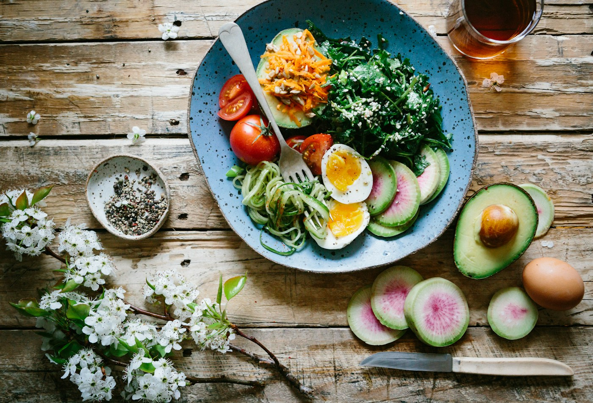

مجلهٔ سبزینه
برای انتخابهای بهتر،
کمی بیشتر بدان.
یادداشتهایی دربارهٔ غذا، برنامهریزی و عادتهای روزمره؛ ساده، خواندنی و نزدیک به زندگی.

پیشنهاد مطالعهیک هفته غذای خوب؛
یک هفته غذای خوب؛
بدون سردرگمی
از خرید مواد اولیه تا انتخاب وعدهها؛ برای روزهای شلوغ، تصمیمهای سادهتری بگیریم.
خواندن مقالهمحتوای این نسخه برای نمایش طراحی است و پیش از انتشار نهایی، بازبینی تحریریه و متخصص انجام میشود.
از یک انتخاب خوب شروع کن.
یک برنامهٔ غذایی، متناسب با سلیقه و زندگی تو.